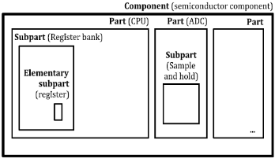
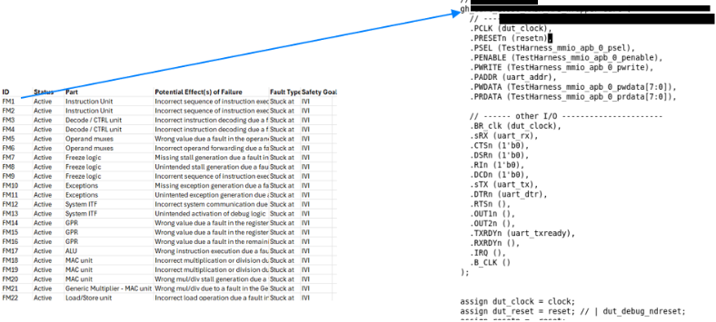

Breaking Down Failures: Elementary Subpart Granularity Being Foundation of Safety Analysis & Verification
分解失效：以 Elementary Subpart 粒度作为安全分析与验证的基础
简介
论文针对 ISO 26262 半导体功能安全流程中定量 FMEDA 与 fault injection 依赖后端 netlist、问题发现晚、仿真与计算开销大的三大瓶颈，提出 Elementary Subpart Extraction（ESE）方法。ESE 在 RTL 阶段用 Quick Synthesis 枚举全部 sequential elements，静态追踪每个元素的 fan-in combinational cone of logic（COL），并以 timing-based dependency analysis 消除共享组合逻辑在聚合失效率中的重复计数，为每个 elementary subpart 计算失效率 λ，建立 RTL 元素到 FMEDA 失效贡献的解析映射。在约 12,000 个 sequential elements、450,000 个 combinational gates 的嵌入式 RISC-V CPU 案例中，ESE 数据自动生成 FMEDA 工作产品与 Safety Verification Plan，并生成精确故障列表驱动 targeted fault injection，形成 FMEDA 结构分析与 FI 行为结果的闭环。作者声称该方法明显改善 SPFM 与 LFM 收敛、降低对穷举 fault simulation 的依赖并缩短安全验证周期，实现安全验证的 shift-left。
问题
传统半导体功能安全工作流存在三个瓶颈：1) 数据可用性晚——fault injection 与定量 FMEDA 传统上在 netlist 上执行，架构变更难以纳入，沦为最终检查点；2) 仿真与计算开销大——多轮迭代耗费在剔除功能或结构冗余的注入故障上；3) 架构洞察有限——传统 FMEDA 是反应式的，未保护的 combinational cones of logic（COL）、安全机制覆盖不全、诊断不一致等架构弱点直到 tapeout netlist 或 silicon validation 阶段才被发现，导致 RTL freeze 后的多轮设计/验证迭代或追加软件诊断，推高进度、风险与验证成本。
方法
提出 Elementary Subpart Extraction（ESE）结构化抽象方法：以每个 sequential element（flip-flop、latch、RAM/FIFO bit）为根节点，用 Quick Synthesis 在 RTL 枚举全部存储元素，建立 sequential 节点与潜在故障源的一对一映射；通过静态依赖分析追踪该元素的 fan-in COL（含层次化 RTL 表达式），并针对不同 sequential 元素 COL 重叠导致的共享组合逻辑重复计数问题，采用 timing-based dependency analysis 进行修正；为每个 ESP 计算失效率 λ_ESP，形成 RTL-based FMEDA 的结构骨架。结构相似的 ESE 聚合为 FMEDA 条目（合并 effective area 与 failure rate），支持 RTL 级 What-If 分析预览 SPFM/LFM 等安全指标；FMEDA 条目经自动化转换为 Safety Verification Plan，生成精确故障列表驱动 targeted fault injection，减少 FI 仿真负载，并在设计阶段支持增量更新（如新增 safety mechanism），实现 FMEDA 与 FI 的闭环验证。整个流程由脚本与多种 EDA design/timing 分析工具及 FMEDA 工具自动化完成。
关键结果
案例设计规模：in-order single-issue 嵌入式 RISC-V CPU core，约 12,000 个 sequential elements（flip-flops 与 latches）与约 450,000 个 combinational logic gates；基线安全机制包括 register file 读/写 parity、data RAM 的 ECC、基本 watchdog timer 与 control register 写入 sanity check
论文正文声称 ESE 带来 SPFM 与 LFM 收敛的明显改善、更精确的 fault rate attribution 与 diagnostic balancing，并减少 fault injection 负载；但具体量化数值位于正文未附的表格（Table 2/3）中，未在论文中说明
创新点
区别于依赖 gate-level netlist fault injection 与早期人工/定性 FMEDA 的传统流程，ESE 依据 ISO 26262-11 的 Part/Subpart/Elementary Subpart 分解模型，将安全分析前移到 RTL 抽象层级：建立 RTL 结构元素与 FMEDA 失效贡献之间的解析映射，使定量评估可在 fault simulation 之前完成；用 timing-based 依赖分析解决 COL 重叠的重复计数；并将 FMEDA 条目自动转换为 Safety Verification Plan 驱动 targeted FI，把 FMEDA 从合规性活动转变为动态设计优化工具。
团队参考意义
相关度级别：high
命中能力域：2.5 功能安全与安全机制 | 2.6 Fault simulation/Z01X/TFMEA | 2.7 CyberSec/自动化
理由：论文直接命中 2.5：完整覆盖 ISO 26262 半导体安全分析的核心要素——FMEDA、failure mode 建模、failure mode 到 safety mechanism 的映射、DC/SPFM/LFM/PMHF 定量指标、Safety Verification Plan 与 safety verification，与团队的 Safety Manual/FMEA/TFMEA/safety case 交付能力直接对应。同时命中 2.6：其 targeted fault injection、精确故障列表生成、FMEDA 结构分析与 FI 行为结果的闭环，与团队基于功能 stimulus 的 fault injection、fault grading 及 FuSa TFMEA/FMEDA 论证关联高度一致。自动化方面（脚本 + EDA 工具完成 ESE 提取、FMEDA 自动生成与 Safety Verification Plan 转换）呼应 2.7 的 Data Source 到 FMEDA/DFMEA/JAMA export 自动化方向。对团队 LPDDR/HBM4/UCie 产品线的安全文档与安全验证流程有直接落地价值。
建议动作：深入精读并做内部分享
中文全文
Breaking Down Failures: Elementary Subpart Granularity Being Foundation of Safety Analysis & Verification
故障分解：基本子部件粒度作为安全分析与验证的基础
Luc Baudoin，高级安全工程师，AMD 奥斯汀（Luc.Baudoin@amd.com）
Vedant Garg，解决方案架构师，SYNOPSYS 奥斯汀（Vedantg@synopsys.com）
Abstract
在 ISO 26262（下文简称“该标准”）指导下的功能安全，已成为面向汽车及其他安全关键领域的复杂半导体设计的核心。该标准 [3] 为半导体元器件提供了明确的指导，重点涵盖硬件故障分析、安全机制以及故障注入的作用。
半导体供应商面临的一些实际挑战包括：
然而，当前的流程仍然依赖于在生命周期后期才发现薄弱环节，这会造成代价高昂的迭代，并给安全论证（safety case）的编制带来风险。因此，需要一种系统化、由自动化驱动的方法，以便在符合该标准指导 [3] 的同时加快闭环。
图 1（来自该标准 [3]）就安全组件如何划分为部件（Part）、子部件（Subpart）和基本子部件（Elementary Subpart）提供了指导。此外，原语门（primitive gate）中的故障（Fault）可能导致时序逻辑（Sequential logic）中出现错误（Error），若未受保护，则可能进而引发失效（Failure）。如果错误被检测或发现，则该失效随后可以得到缓解。

本文提出基本子部件提取（elementary subpart extraction, ESE）方法学，该方法学提供了一个与该标准 [3] 一致的真正左移（shift-left）安全分析框架。通过将设计分解为能够反映失效模式和安全相关性的基本子部件，ESE 能够在流程早期系统地识别差距。这显著减少了为证明安全目标达成所需的代价高昂的迭代次数和故障注入数量。
如该标准 [3] 所述，安全原子单元的分解是通过将 RTL/网表逻辑分解为语义上有意义的基本子部件来完成的。这些子部件表示存储、组合路径和控制逻辑。每个子部件都直接关联失效模式，并映射到安全机制。本文提出的框架不仅提供结构化分解，还在 RTL 元素与 FMEDA 级别的失效贡献之间建立了分析性映射，从而能够在故障仿真之前很早就进行定量评估。
关键词：FMEDA、故障注入、失效模式、基本子部件、ISO 26262、诊断覆盖率（DC）、安全机制、设计验证、SPFM、LFM、PMHF
A. Background and traditional approach
汽车 SoC 的功能安全要求在定量安全保证与验证效率之间取得审慎的平衡。该标准为实现这一平衡建立了严格的框架，规定了一个从危害分析与风险评估（HARA）出发，到安全目标推导、技术安全概念制定，最终对已实现的安全机制进行验证与确认的生命周期。在该框架内，硬件架构度量——尤其是单点故障度量（SPFM）和潜伏故障度量（LFM）——是符合性的关键证据。要达到这些度量指标，需要对半导体设计进行详细的失效模式、影响及诊断分析（FMEDA）。[2]
早期的 FMEDA 方法在很大程度上是手动的、定性的，依赖设计者的洞察将潜在失效模式映射到其影响。随着设计复杂度的不断提高，借助结构网表分析以及在 RTL 或 GLS 上进行的故障注入，自动化方法应运而生。
B. Problem statement
传统工作流程存在三个主要瓶颈：
1. Late availability of data:
传统上，故障注入和定量 FMEDA 是在网表上执行的。任何架构变更都极难纳入其中，这使得该步骤仅仅成为最终检查点。
2. Simulation and compute overhead:
需要花费多次迭代来去除大多数在功能上或结构上冗余的注入故障，从而增加了计算开销。
3. Limited architectural insight:
传统的 FMEDA 是被动式的，关注的是哪里会失效，而不是为什么容易失效。诸如未受保护的组合逻辑锥（combinational cones of logic, COL）、安全机制覆盖不完整或诊断不一致等架构弱点，往往直到在流片后的网表上运行故障注入实验时或在硅片验证阶段才被发现。
半导体设计中的安全验证在很大程度上仍然是被动式的，即在寄存器传输级（RTL）冻结之后或验证收敛阶段才处理安全覆盖率的不足。这种晚期发现会导致多次设计与验证迭代，或者需要在软件诊断上投入额外的工作。这种方法会显著增加进度时间、风险和验证成本。
Issues in a typical design flow are:
本文提出基本子部件提取（elementary subpart extraction, ESE），这是一种自动化安全分析方法，利用扇入 COL 分析和基于时序的重叠校正，将设计的时序逻辑分解为安全相关单元。ESE 框架在 RTL 层级与 FMEDA 层级的失效贡献之间建立了分析映射，从而能够在故障仿真之前很早的阶段实现定量评估。
A. Elementary subpart Extraction
基本子部件提取（ESE）是一种结构抽象方法学，旨在直接在 RTL 抽象层级上实现定量化的 FMEDA 级安全分析。它提供了一种早期的、系统化的方式，将架构假设与结构故障模型相关联，从而最大限度地减少传统安全分析对后期设计产物的依赖。ESE 框架不仅提供结构分解，还在 RTL 元素与 FMEDA 级失效贡献之间建立了分析映射，使得定量评估能够在故障仿真之前很早的阶段进行。我们利用这一概念，将 RTL 设计分解为基本子部件（elementary subpart, ESP），其中每个 ESP 都锚定在一个时序逻辑单元周围，通常是一个触发器、锁存器或存储器位，以及其 COL（即驱动其输入的所有组合逻辑）。[3] 来自标准 [3] 的图 2 可以被解读为表达了相同的概念：组合逻辑门的海洋扇入到某个时序单元，并最终导致失效。
· Identification of sequential elements
所有存储元件（例如触发器、锁存器、RAM、FIFO）都在 RTL 层级（使用 Quick Synthesis）被逐一枚举。这些元件中的每一个都成为一个基本子部件的根节点。这一步骤在时序节点与潜在故障源之间建立了一一映射。[8]
对于每个时序元件，使用依赖性分析静态地追踪其组合 COL，即所有可能影响该元件取值的逻辑路径。这一逻辑锥有效地

代表了该元件的信息流域，同时捕获了可能对其状态产生影响的直接组合逻辑以及层次化的 RTL 表达式。[4]
· Failure rate attribution
每个子部件的失效率（λ_ ESP）计算如下：
其中：
所得的 λ 值按子部件逐一存储，构成基于 RTL 的 FMEDA 的结构主干。
来自不同时序元件的 COL 经常相互重叠，导致在聚合失效率中可能对共享的组合逻辑进行重复计数。ESE 通过基于时序的依赖性分析来解决这一问题：
上述步骤通过脚本以及多种 EDA 设计工具与时序分析工具的组合实现了自动化，成为本方法的第一步。
B. Safety Analysis for FMEA / FMEDA
安全分析是对可能危及电气/电子（E/E）系统功能安全的故障、失效与危害进行系统性识别和评估的过程。其目的在于确保安全目标与安全需求得到定义、实现和验证，从而使残余风险降低至可接受的水平——该水平由汽车安全完整性等级（ASIL）[3]确定。
正如多项先前研究[8][7]所强调的，安全分析的关键目标在于：
鉴于现代 SoC 的规模与复杂性——其包含数百万个时序元件以及相互交互的 IP——标准 [3] 引入了一种层次化分解模型，使半导体安全分析既可行又可追溯。这种层次化分解使安全分析能够在多个抽象层级上执行，每一层级都细化所需的细节程度，并确保安全目标、安全需求与验证结果之间的一致性映射。这种分解实现了一种自底向上的组合式方法，如表 1 所示，其中在较低层级（子部件或基本子部件）执行的分析可以被复用并向上聚合为更高层级的安全度量。该方法在底层失效数据与系统级安全保障之间提供了可扩展且可追溯的关联。
| Level | Safety Activities | Verification Focus |
|---|---|---|
| Full Semiconductor device under analysis | SoC safety plan, FMEDA summary | Component |
| Part | Safety architecture design, ASIL decomposition, top-level SPFM/LFM computation | Architectural verification, safety goal tracing |
| FMEDA preparation, local definition | mechanism Block-level simulation and fault injection | Subpart safety |
| Elementary Subpart Fault modeling, diagnostic | RTL/Gate Fault injection, formal proofs | coverage analysis |
| Level | Safety Activities | Verification Focus |
此项工作利用从基本子部件提取的数据，并借助 EDA 工具完成了 FMEDA。
C. Integration of ESE FMEDA for Early Verification
半导体设计中的安全验证传统上是一项后期活动，需要在门级网表可用之后才能进行。基本子部件提取（ESE）的引入将这一验证提前到设计周期的更早阶段，实现了基于 RTL 的安全验证，与标准中针对半导体安全生命周期活动的“早期验证”建议保持一致 [3]。在标准的汽车安全流程中，故障注入（FI）用于验证诊断覆盖率（DC）并确认安全机制的鲁棒性。然而，在门级执行这一验证会带来高昂的计算成本和有限的敏捷性。将 ESE 提取得到的 FMEDA 模型集成到 FI 中可同时应对这两个挑战，在 RTL 层级提供结构精度与功能关联性。[1] [5] [6]
定向 FI 方面，这降低了仿真负载，同时保持了安全相关区域的完整性。我们能够生成精确的故障列表，从而减轻故障注入的负载。结果闭环协作方面，这在 FMEDA 结构分析与 FI 行为结果之间建立了闭环验证回路，同时提升了可追溯性与覆盖率问责性。设计阶段的动态更新方面，由于 ESE 在 RTL 层级运行（快速综合），诸如添加安全机制或修改逻辑之类的增量设计更新可以在设计过程的早期完成。
图 3 对比了传统方法与涉及基本子部件提取和早期验证的新方法，后者最终为安全验证流程带来了整体的前移（shift left）。

Design under test (DUT) (representative):
本案例研究中使用的 CPU 核是一个小型嵌入式 RISC-V 设计，采用按序（in-order）、单发射（single-issue）架构。其 RTL 实现包含约 12,000 个时序元件（如触发器和锁存器）以及约 450,000 个组合逻辑门。初始基线配置包含若干安全机制，例如针对寄存器堆读写操作的奇偶校验保护、数据 RAM 上的纠错码（ECC）、一个基本的看门狗定时器，以及针对控制寄存器写入的合理性检查。图 4 展示了本案例研究中将用于测试该 CPU 核的整体方法与流程。

A. Extraction of ESE on the RTL CPU
图 5 展示了提取的数据如何被导入 FMEDA 工具。这些数据将用于各种失效模式的设计关联。
B. Safety Analysis Using ESE Data
结构相似的 ESE 会被聚合为 FMEDA 条目，并合并其有效面积与失效率。早期 FMEDA 提供了在寄存器传输级（RTL）层面执行 What-If 分析的能力，并可预览整体安全度量的有效性以及架构脆弱性。图 6 展示了该 IP 的失效模式与影响分析（FMEA）分解，以及每个失效模式实际上如何代表了所分析的硬件逻辑。一旦我们完成了所有与设计相关联的失效模式以及安全机制/诊断的映射，便能以图 7 所示的格式提取出完整的 FMEDA。使用电子设计自动化（EDA）软件确实有助于实现自动化和错误检查，以及跟踪此过程中发生的变更。



C. Generation of Safety Verification Plan
通过自动化提取，FMEDA 条目及其关联设计被系统地转换为一份全面的安全验证计划，确保完整且可追溯的覆盖。
采用故障感知的故障注入方法，使故障能够在相关上下文中被引入，从而提升测试的相关性和安全验证的有效性。该流程的主要优势包括加快测试创建速度，以及能够将结果直接关联到特定失效模式和安全目标，从而支持审计准备和法规合规。这种方法减少了人工工作量，并最大限度地降低了人为错误的风险，同时提供清晰的文档，促进跨团队的高效协作。
#### Safety Verification Plan ####
# 安全机制定义 SafetyMechanism PSM_001 { Detect{ "top_testbench.dut_top_i.core_cpu.ipx_rf.safety_err_code" } } # 失效模式可观测性 FailureMode FM_001 { Observe { "top_testbench.dut_top_i.core_cpu.ipx_rf" } SafetyMechanisms (PSM_001) } # 安全感知故障生成 FaultGenerate FM_019,FM_021 { NA [0, 1]{PORT "top_testbench.dut_top_i.core_cpu.ipx_rf.**"} NA [0, 1]{ VARI "top_testbench.dut_top_i.core_cpu.ipx_rf.**" }
4. Conclusion
将基本子部件提取（ESE）应用于半导体安全分析，是一项具有实用且可扩展设计方法学的重要进展。通过系统地将寄存器传输级（RTL）分解为细粒度的子部件——每个子部件代表一个时序单元及其对应的扇入锥——ESE 方法将安全分析从被动的验证工作转变为主动的架构设计实践。从定量角度来看，应用 ESE 在单点故障度量（SPFM）和潜在故障度量（LFM）的收敛性方面均带来了显著改进。基于面积加权的子部件建模提供了更精确的故障率归因和诊断平衡，从而提升了安全分析的准确性。[5][6]
| Topics | Elementary Subpart Methodology Contribution/Gains |
|---|---|
| Shift-Left Enablement (FMEDA) | Enables FMEDA computation at RTL without waiting for final gate-level data. |
| Architectural Visibility | ESE-based modeling allows detection of hidden architectural vulnerabilities. |
| Iterative Efficiency | Allows rapid re-evaluation of safety metrics when RTL or safety mechanism bindings change. |
| Overlap Correction | Eliminates double counting of shared logic via timing and dependency analysis, yielding realistic λ allocation. |
| Hierarchical Integration | Supports compositional safety analysis from IP to SoC level, enabling reuse of ESP data as verified work products. |
| Scalability | This enhanced FMEDA approach leverages early RTL data to quantify failure propagation paths thus improving scalability for both FMEDA and Fault injection flow. |
| Topics | Elementary Subpart Methodology Contribution/Gains |
总而言之，基于 ESE 的 FMEDA 与验证流程为安全验证带来了可度量的左移（shift-left）。它减少了对穷举故障仿真的依赖，能够更早、更准确地洞察架构上的薄弱环节，并缩短了整体安全确认周期。通过将分析精度与自动化可扩展性相结合，ESE 使 FMEDA 从一项合规性活动转变为动态的设计优化工具，从而同时提升了效率与安全信心。
该方法学代表了迈向下一代 ISO 26262 工作流程的务实一步：在这样的流程中，安全性并非在设计成熟之后才加以验证，而是在整个 RTL 开发生命周期中被持续地设计实现。
| Metric | Traditional Flow | ESE Fault Aware | Improvement |
|---|---|---|---|
| IP1 | IP1 | IP1 | IP1 |
| SPFM | 62.3% | 915% | 46.8% |
| Faults Simulated | 11,604 | 7,809 | 33% |
| Unresolved Faults | 1,200 | 600 | 50% |
| IP2 | IP2 | IP2 | IP2 |
| SPFM | 77.8% | %L.06 | 16.5% |
| Faults Simulated | 72,867 | 43,632 | 40% |
| Unresolved Faults | 5,100 | 870 | 83% |
| Metric | Traditional Flow | ESE Fault Aware | Improvement |
证据核查
1 条证据未在原文中核对到